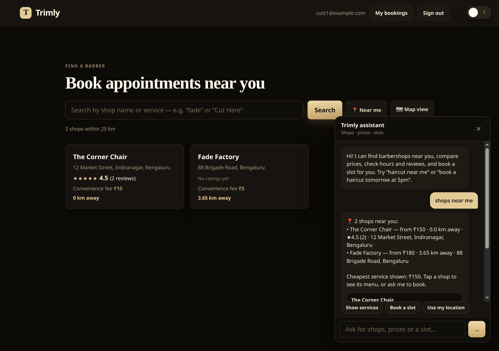
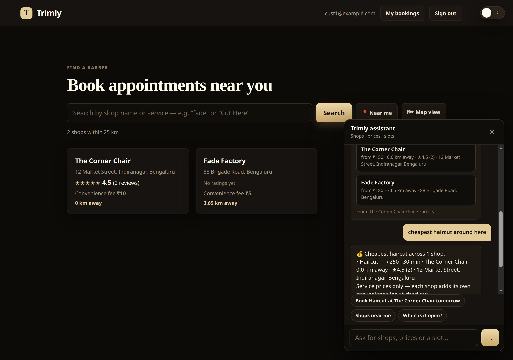
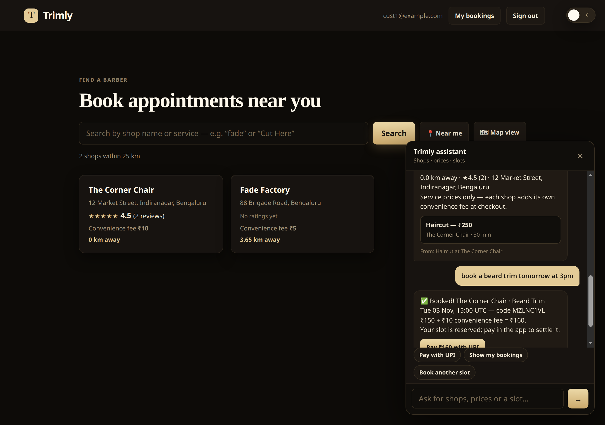
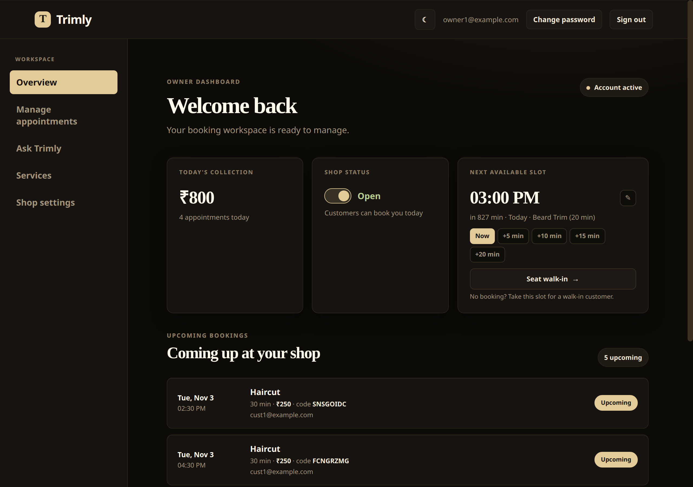
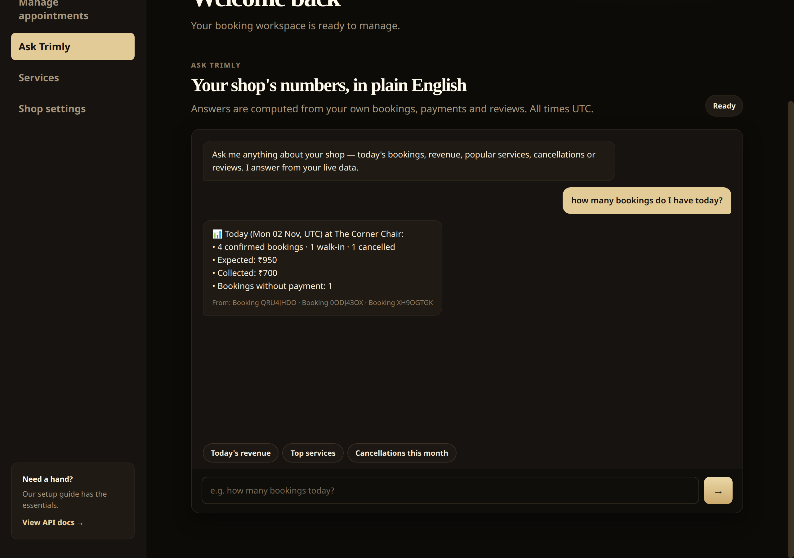
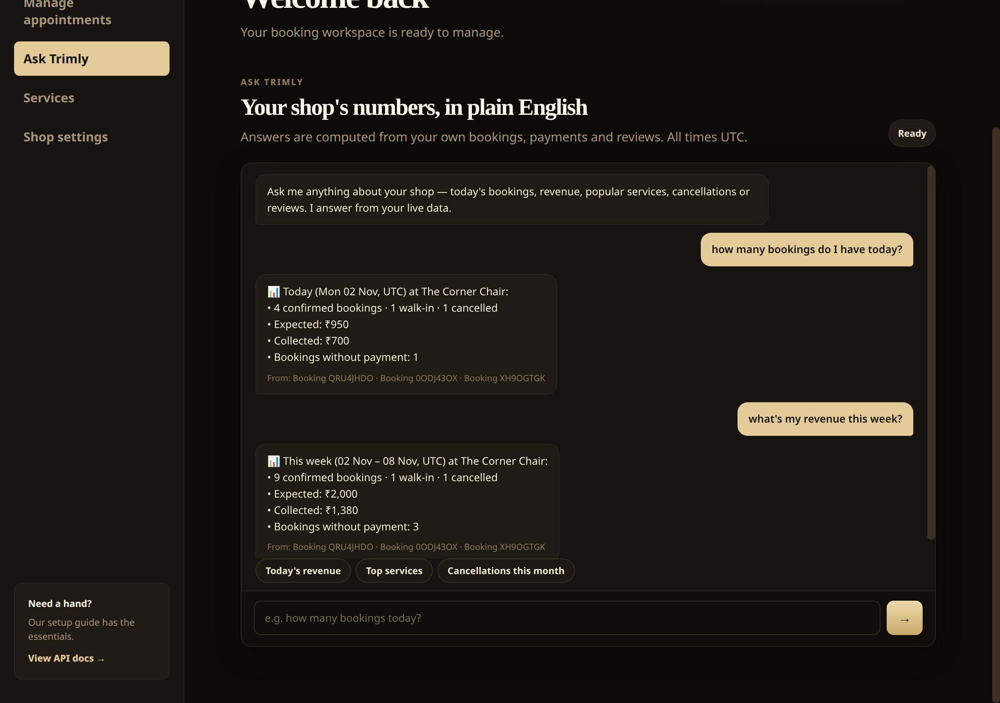
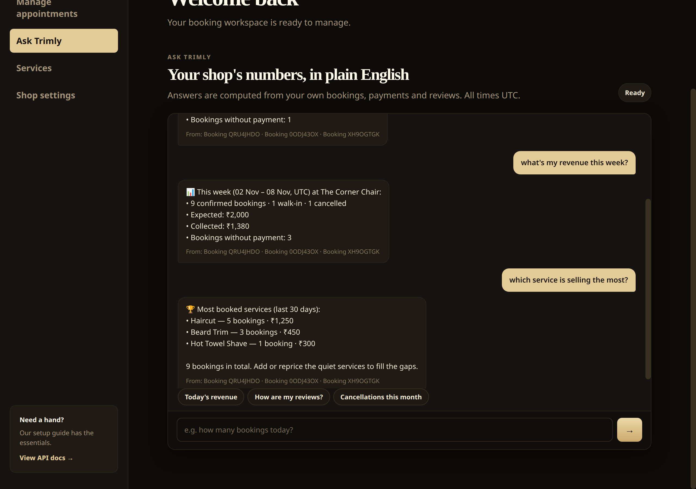

Project report · November 2026
A grounded chat layer for a barbershop booking platform: customers ask for shops, prices and slots; owners ask for today's bookings and revenue. Every sentence is composed from rows retrieved during that request — and every reply carries the rows it was built from.
Trimly is a booking platform for independent barbershops. Owners publish a shop, a service menu, opening hours and a pin on the map; customers find a shop, pick a slot and pay. The assistants sit on top of that same data as a second interface — no new database, no duplicated rules, no separate copy of the truth.
Every choice below is the smallest thing that solved the problem at hand — no framework without a reason, no service without a job.
| Layer | Technology | Why this one |
|---|---|---|
| API | FastAPI 0.115 + Starlette | Typed models, dependency injection for auth and sessions, OpenAPI docs generated at /docs. |
| Contracts | Pydantic v2, pydantic-settings | ChatReply is the single contract for UI and tests; configuration comes from the environment. |
| Persistence | SQLAlchemy 2.0 (typed models) | One ORM for Postgres in production and SQLite in tests; booking rules live as indexes on the table. |
| Database | PostgreSQL 16 (psycopg 3) | Partial unique index on (shop_id, starts_at) where confirmed — double-booking is impossible. |
| Auth | JWT (PyJWT), Argon2 (pwdlib) | Role-based dependencies; anonymous browsing is allowed, a broken session is never silently downgraded. |
| Retrieval | Hand-written BM25 index | No embedding service, no key, no rebuild job: the corpus is rebuilt per request, so it cannot cite a deleted row. |
| Language | Deterministic intent + entity parsing | Days, times and budgets parsed by explicit rules — routing is testable and reproducible, not sampled. |
| Payments | Provider interface: Razorpay · UPI intent · mock | The booking flow never talks to a gateway directly; the implementation comes from configuration. |
| Messaging | WhatsApp Cloud API | A second channel for the same booking services — the web UI is not the only door into the domain. |
| Frontend | Vanilla ES modules, no build step | Two portals shipped as static files; Leaflet 1.9.4 for map views; no bundler to maintain. |
| Testing | PyTest + FastAPI TestClient | Every test drives the real HTTP API — the same interface the browser uses. |
| Ops | Docker, compose, Alembic, Uvicorn | API + Postgres + Redis + Adminer; migrations tracked from day one. |
The chat layer is a consumer of the domain, not a parallel implementation of it: it calls the same availability and booking services as the web dialog and the WhatsApp flow.
sendChat() posts the text plus the shop/service
context from the previous reply, optional coordinates, and the bearer token if signed in.customer_documents(db, lat, lon) turns shops,
services, hours and reviews into documents; the owner side uses bookings, payments, reviews
and the shop profile for the last 30 days.parse_day() handles “tomorrow”, weekdays, “12 Oct”, ISO dates;
parse_time() handles “5pm”, “17:30”, “noon”, “evening”.AvailabilityService intersects business
hours, the slot interval, existing confirmed bookings and “future only”. The chat never
invents a time.sources, tappable cards, a booking object (if any) and three follow-up options.POST /api/v1/chat/customer
{ "message": "book a beard trim tomorrow at 3pm" }
200 OK
{ "answer": "✅ Booked! The Corner Chair · Beard Trim\nTue 03 Nov, 15:00 UTC — code MZ1NCTV1
₹150 + ₹10 convenience fee = ₹160.",
"intent": "book",
"booking": { "id": 12, "code": "MZ1NCTV1", "starts_at": "2026-11-03T15:00:00+00:00",
"price_paise": 15000, "convenience_fee_paise": 1000, "total_paise": 16000 },
"sources": [ { "doc_id": "service:2", "kind": "service", "label": "Beard Trim at The Corner Chair" } ],
"suggestions": [ "Pay with UPI", "Show my bookings", "Book another slot" ] }
Each document is one row-shaped fact. The index is built in memory for the request, scored with BM25 (the ranking function behind Lucene/Elasticsearch), and thrown away afterwards.
| Document | Customer corpus | Owner corpus |
|---|---|---|
| shop:<id> | name, address, pincode, menu summary, rating, hours, distance | name, address, open/closed, menu |
| service:<id> | name, price, duration, shop | — |
| hours:<id> | one sheet per shop, all seven days | — |
| booking:<id> | — | code, service, price, who, time, status |
| payment:<id> | — | amount, method, status |
| review:<id> | stars, comment | stars, comment |
idf(t) = ln( 1 + (N - df + 0.5) / (df + 0.5) ) score(d) = Σ idf(t) · tf · 2.5 / ( tf + 1.5 · (0.25 + 0.75 · len(d) / avg_len) )
Three details do most of the practical work:
RagIndex
for a vector store behind the same search(query, limit, kinds) method — handlers
and UI do not change.
| Intent | Example |
|---|---|
| nearby | shops near me |
| find_shops | any fade shops? |
| compare_prices | cheapest haircut · compare prices |
| services | how much is a fade? |
| hours | when are they open? |
| reviews | is it any good? |
| availability | free slots tomorrow? |
| book | book a beard trim 3pm |
| my_bookings / cancel | my bookings · cancel MZ1NCTV1 |
| fallback | anything else → top-4 BM25 hits, cited |
| Intent | Example |
|---|---|
| today_bookings | how many bookings today? |
| today_revenue | today's collection? |
| period_report | this week / last month |
| next_appointment | who is next? |
| top_services | what sells most? |
| walk_ins | any walk-ins today? |
| cancellations | cancel rate this month? |
| reviews | how are my ratings? |
| hours | am I open Sunday? |
| customers | how many regulars? |
Scores are additive and length-weighted — a two-word phrase is worth 1.75× a one-word keyword — so “how many bookings today” beats “bookings” without a model to call.
All three report handlers resolve the window through parse_period(), which
returns (start, end, label, single_day). The label is derived from the same
timestamps that are counted, so a headline can never describe a different window than the
body.
“how many bookings do I have today?” → Today (Mon 02 Nov, UTC) “what did I collect this week?” → This week (02 Nov – 08 Nov, UTC) “how many last month?” → Last month (01 Oct – 31 Oct, UTC)
📊 Today (Mon 02 Nov, UTC) at The Corner Chair: • 4 confirmed bookings · 1 walk-in · 1 cancelled • Expected: ₹950 ← sum of booked service prices • Collected: ₹700 ← COMPLETED payments only • Bookings without payment: 1 From: Booking QRU4JHDO · Booking 0ODJ43OX · Booking XH9OGTGK
Captured from the live application at 1280×900 (2× device pixels) against seeded demo data: two shops, five services, six bookings, two reviews. All times UTC.


compare_prices intent, which ranks menu rows by price and explains the saving.
A price word overrides the distance wording in the same sentence.
BookingService
— the same call the web dialog makes, so the unique index still guards the slot.



ChatReply.sources names the documents used; the UI renders “From: …”.OwnerChat is built for one shop; every query filters on shop_id, so no owner sees another's numbers.AvailabilityService, bookings from BookingService.
37 tests in total, 13 of them for the assistants, all driving the real HTTP API through
TestClient:
/customer/bookings/chat/owner; unauthenticated gets 401/403$ pytest -q 37 passed in 13.4s
services.price_paise; offer a slot that availability would reject; show one shop's
bookings to another shop's owner; or claim a weekly figure under a daily heading.
app/ ├── api/routes/chat.py POST /api/v1/chat/customer · /chat/owner ├── schemas/chat.py ChatRequest, ChatReply, ChatCard, ChatBooking, ChatSource ├── services/chat/ 639 + 266 + 192 + 499 lines │ ├── rag.py Document, RagIndex (BM25), corpus builders, citations │ ├── intents.py intents, day/time/budget parsing, content tokens │ ├── customer_chat.py discovery · prices · slots · booking · cancel │ └── owner_chat.py today/week/month · top services · walk-ins · reviews ├── services/booking_service.py booking rules (shared with web + WhatsApp) ├── services/availability_service.py the only source of bookable start times ├── customer_web/ customer portal + floating assistant panel └── web/ owner portal + “Ask Trimly” view tests/test_chat.py 13 tests · 219 lines
Documentation: docs/chatbot/README.md (structure and naming),
docs/chatbot/working-flow.md (full flow, diagrams, transcripts),
docs/linkedin-post.md (public write-up).
| Limitation | Next step |
|---|---|
| Payments settle on the mock provider in this build, so chat bookings stay CONFIRMED-but-unpaid until UPI/Razorpay credentials are configured. | Wire the gateway keys and register the webhook; the provider interface and the UI states already exist. |
| Retrieval is lexical: phrasing far from the shop/service vocabulary reaches the fallback path. | Add query expansion from past unanswered questions; keep BM25 as the default and measure before switching. |
The conversation has no memory beyond shop_id/service_id
carried by the client, so “the second one” cannot be resolved. |
Store the last few turns per session and resolve pronouns against the previous cards — the reply contract already returns them. |
| Everything is English, and hours are reported in UTC. | Per-shop timezone on the profile, and a translation layer over the templates. |
| No per-shop analytics on what customers ask. | Log intent + retrieved doc ids; the questions owners cannot answer are product research. |